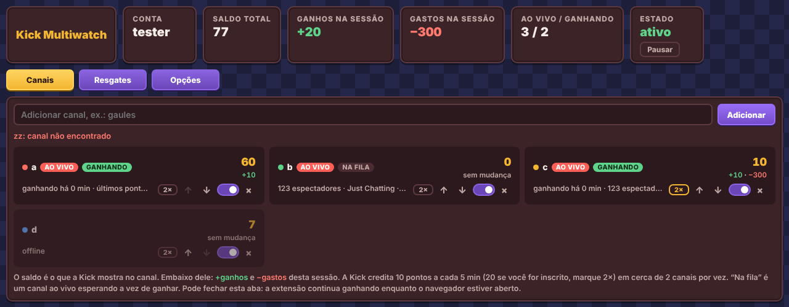

Pontos da Kick em vários canais, direto do navegador.
O Kick Multiwatch é uma extensão que acompanha vários canais da Kick ao mesmo tempo e vai ganhando pontos de canal para você, sem abrir nenhuma live. Usa o login que você já tem na kick.com: sem Python, sem colar token.
Versão 0.3.1 · instalação manual em 2 minutos, veja como · não oficial, não é da Kick. Leia os riscos antes.

Duas vagas, uma fila, e a vez passa sozinha
A Kick credita +10 pontos a cada 5 minutos em cerca de 2 canais por conta, não importa quantos estejam abertos. Então a extensão coloca 2 canais ao vivo para ganhar e deixa o resto na fila. Quando um canal recebe os pontos, a vaga passa para quem espera há mais tempo.
Login do navegador
Se você já está logado na kick.com, não precisa fazer nada. Saiu da conta? A extensão para e pede para entrar de novo. Para trocar de conta, é só entrar com a outra.
Vários canais de uma vez
Cole vários nomes separados por espaço ou vírgula. As setas ↑ ↓ mudam a prioridade e o interruptor liga ou desliga cada canal.
Troca automática
Depois de cada crédito, a vaga passa para o próximo canal ao vivo. Se um canal ficar 7 minutos sem receber, também passa a vez.
2× para inscritos
Onde você é inscrito, a Kick paga 20 em vez de 10. Esses canais ganham primeiro e não saem da vaga. A extensão tenta detectar sozinha, e você também pode marcar.
Painel completo
Saldo de cada canal, total, ganhos e gastos da sessão, quem está ao vivo, ganhando ou na fila. Pode fechar a aba: no Chrome a extensão continua trabalhando.
Resgates
Quando o saldo de um canal cai, a extensão compara a queda com os preços das recompensas e anota o que você provavelmente resgatou. Ela nunca resgata nada sozinha.
Opções
Quantos canais ganham ao mesmo tempo, o modo de troca, os preços das recompensas (padrão 300, 500 e 1000), e baixar ou apagar os dados da sessão.
Pausar a qualquer hora
O botão Pausar no topo do painel para tudo na hora. Clique no ícone "K" da extensão para abrir o painel de novo.
Apoie o dev
Um botão no painel abre a página de apoio no LivePix. Nada é cobrado nem enviado automaticamente.
Do download ao painel em dois minutos
A extensão ainda não está nas lojas, então a instalação é manual. Escolha o seu navegador.
-
Baixe e extraia
Baixe o kick-multiwatch-chrome.zip e extraia para uma pasta que você não vai apagar, por exemplo
Documentos/kick-multiwatch. O navegador lê a extensão dessa pasta, então se ela sumir a extensão para. -
Ligue o modo do desenvolvedor
Abra
chrome://extensions(no Edge,edge://extensions; no Brave,brave://extensions) e ligue Modo do desenvolvedor no canto superior direito. -
Carregue a pasta
Clique em Carregar sem compactação e escolha a pasta extraída, a que tem o arquivo
manifest.json.Se você testou uma versão antiga chamada "Kick Pontos (teste)", clique em Remover nela antes.
-
Fixe e abra o painel
Clique no ícone de quebra-cabeça da barra do navegador, fixe o Kick Multiwatch e clique no "K" verde para abrir o painel.
Pode fechar a aba do painel: a extensão continua ganhando enquanto o navegador estiver aberto.
-
Baixe o arquivo
Baixe o kick-multiwatch-firefox.zip. Não precisa extrair. Precisa do Firefox 128 ou mais novo.
-
Carregue a extensão
Abra
about:debugging#/runtime/this-firefox, clique em Carregar extensão temporária… e escolha o arquivo baixado. -
Dê acesso à kick.com
Clique no ícone "K". Se aparecer Permitir acesso à kick.com, clique e aceite.
-
Deixe a aba do painel aberta
No Firefox, mantenha a aba do painel aberta enquanto quiser ganhar pontos. Sem ela o Firefox pode suspender a extensão.
Extensão temporária some quando você fecha o Firefox. Na próxima vez, é só carregar de novo pelo mesmo caminho.
Primeiro uso
Entre na sua conta da kick.com nesse navegador (se já está logado, não precisa fazer nada). Abra o painel pelo ícone "K". Se aparecer "Faça login na Kick", entre na kick.com e clique em Já entrei, verificar. Depois é só adicionar os seus canais.
Gostou? A extensão é grátis e mantida por uma pessoa só. Qualquer valor no LivePix ajuda a manter ela funcionando quando a Kick muda alguma coisa.
Apoie o devO que já foi testado
A extensão é nova. Isto é o que se sabe até agora, sem exagero.
Testado numa conta real
- Login pelo navegador (Chrome, Linux)
- Leitura do saldo
- +10 pontos em cerca de 5 minutos num canal
- Extensão ativa por 10 minutos sem o Chrome derrubar
Testado numa Kick simulada
- Vários canais, 2 vagas e fila
- Troca depois do crédito
- 2× tomando a vaga
- Registro de resgates
- Sair e entrar de novo na Kick
Ainda não testado
- Vários canais por horas seguidas na Kick real
- Chrome suspendendo a extensão com a aba fechada por muito tempo
- Firefox em geral
Em Opções, a seção Registro mostra quantas vezes o navegador parou a extensão. Ela se religa sozinha em até 30 segundos.
O que pode dar errado
O Kick Multiwatch é um projeto independente, feito por hobby. Não é feito, aprovado nem suportado pela Kick. Veja o que isso significa para você.
Pode ir contra as regras da Kick
Ganhar tempo assistido sem estar assistindo de verdade, e contar como espectador em várias lives ao mesmo tempo, pode violar os Termos de Serviço da Kick. A Kick pode tirar pontos, restringir ou banir a conta. Use só numa conta que você aceita arriscar, e decida depois de ler os termos da Kick.
A extensão usa o seu login da Kick
Ela lê o cookie de login da kick.com que já está no seu navegador, só para fazer pedidos à própria Kick. Ela não guarda esse valor e não envia para nenhum outro servidor. Mesmo assim, só instale a extensão baixada desta página ou do GitHub do projeto: uma cópia alterada por outra pessoa poderia roubar o login.
Usa endpoints internos da Kick
A API oficial da Kick não tem como ganhar tempo assistido, então a extensão usa os mesmos endpoints privados que o site da kick.com. A Kick muda esses endpoints sem aviso. Quando isso acontece, a extensão quebra até ser atualizada.
Os pontos são limitados e não são garantidos
A Kick credita cerca de 2 canais por vez em cada conta, uns 240 pontos por hora no total, ou o dobro em canais onde você é inscrito. A Kick não documenta nada disso e pode mudar a qualquer momento.
Modo do desenvolvedor e avisos do navegador
Fora das lojas, o Chrome só aceita a extensão no modo do desenvolvedor e pode mostrar avisos sobre isso. As atualizações também são manuais: baixe o zip novo, substitua a pasta e clique em recarregar na página de extensões.
Dá para ler tudo o que ela faz
O código não é minificado e cabe em poucos arquivos. Não tem rastreamento nem código remoto. Ela só fala com kick.com e websockets.kick.com.
Resumindo: você usa a extensão com o login da sua conta, por sua conta e risco.
Prefere fora do navegador?
Também existe uma versão em Python, para deixar rodando num terminal, com o mesmo painel em português e o chat de todos os canais. Precisa colar o session_token uma vez.
Como usar a versão Python
- Instale o Python 3.9 ou mais novo pelo python.org. No Windows, marque Add Python to PATH.
- Baixe o kick-multiwatch-python.zip e descompacte numa pasta.
- Windows: dois cliques em
start.bat. Mac e Linux:sh start.shnum terminal dentro da pasta. - O painel abre em
http://127.0.0.1:8787e pede o seusession_token: na kick.com, F12, Application (no Firefox, Storage), Cookies,session_token. Marque Lembrar para salvar emtoken.txt, só no seu computador. - Deixe a janela do terminal aberta enquanto quiser ganhar. Para parar, feche a janela ou aperte Ctrl+C.
Dúvidas frequentes
Ela abre as lives?
Não. Ela nunca carrega vídeo nem áudio. Só manda à Kick o mesmo sinal de "assistindo" que o player da kick.com manda, e mostra os seus pontos.
Preciso deixar o navegador aberto?
Sim. A extensão só trabalha com o navegador aberto. No Chrome, Edge e Brave pode fechar a aba do painel. No Firefox, deixe a aba do painel aberta.
Quantos canais posso adicionar?
Quantos quiser. Mas a Kick credita só cerca de 2 canais por vez em cada conta, então mais canais não dão mais pontos. A troca automática reparte essas 2 vagas entre a sua lista.
A extensão resgata recompensas?
Não. Ela nunca resgata nada. A aba Resgates só anota o que você resgatou na kick.com, deduzindo pela queda do saldo.
Por que não está na Chrome Web Store?
As lojas costumam recusar ferramentas que simulam tempo assistido em outra plataforma. Por isso, por enquanto, a instalação é manual.
Como atualizo?
Chrome, Edge, Brave: baixe o zip novo, extraia por cima da mesma pasta e clique no botão de recarregar da extensão em chrome://extensions. Firefox: carregue o arquivo novo em about:debugging.
É grátis?
Sim. Se for útil para você, tem o botão Apoie o dev no painel e os links aqui embaixo. Apoiar não libera nada extra.
Parou de funcionar. E agora?
Provavelmente a Kick mudou alguma coisa. Veja se tem uma versão mais nova nesta página.
Ajude a manter atualizado
A Kick muda o site com frequência, e cada mudança pede um conserto. Se a extensão te ajuda, uma contribuição pequena paga esse trabalho.